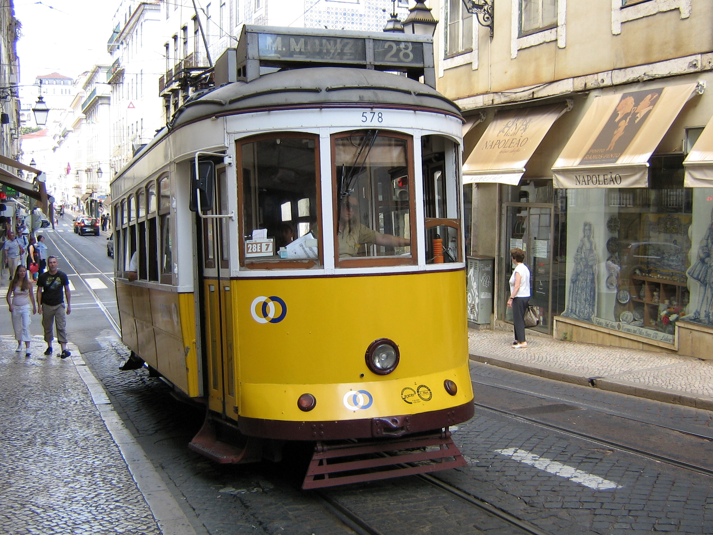

Hotel Mundial
Praça Martim Moniz, 2
Lisboa
Fechas disponibles: 15 al 22 de Junio
Alojamientos
Hotel Lisboa Pessoa
Rua da Oliveira ao Carmo, 8Hotel Avenida Palace
Rua 1º de Dezembro, 123Radisson Blu Hotel Lisboa
Avenida Marechal Craveiro Lopes, 390Itinerario
Día 1 - 15 de junio
- Llegada a Lisboa y check-in
- Paseo por la Baixa
- Cena típica portuguesa
Día 2 - 16 de junio
- Barrio de Alfama
- Castillo de San Jorge
- Miradores de Lisboa
Día 3 - 17 de junio
- Monasterio de los Jerónimos
- Torre de Belém
- Pastéis de Belém
Día 4 - 18 de junio
- Excursión a Sintra
- Palacio da Pena
- Quinta da Regaleira
Día 5 - 19 de junio
- Cascais y Estoril
- Paseo por la costa
- Tiempo libre
Día 6 - 20 de junio
- Tranvía 28
- Chiado y Bairro Alto
- Cena de grupo
Día 7 - 21 de junio
- Mañana libre
- Compras y paseo final
Día 8 - 22 de junio
- Regreso
Actividades

Culturales
- Torre de Belém
- Monasterio de los Jerónimos
- Castillo de San Jorge

Excursiones
- Sintra
- Cascais
- Estoril

Experiencias
- Tranvía 28
- Miradores
- Gastronomía portuguesa
Precios: Desde 800 € a 1400 €